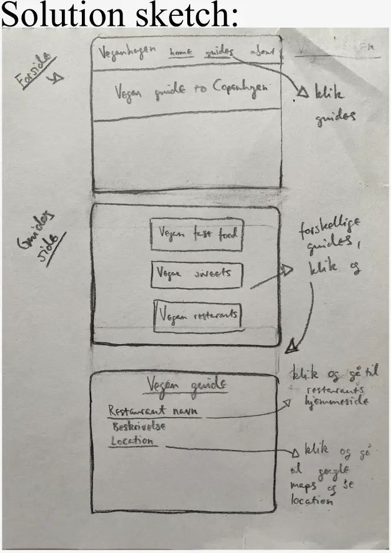
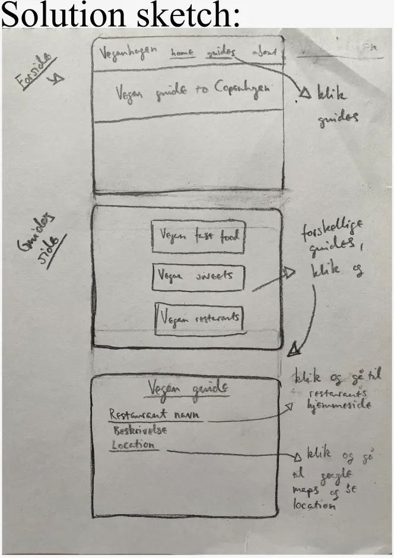

TEMA 3
GRUNDLÆGGENDE UX/UI
I tema 3 designede og lavede vi vores egen hjemmeside. Vi lærte om User Experience design(UX) og User Interface design. I temaet fik vi den grundlæggende forståelse for interaktionen mellem brugere og brugergrænseflader. Dereudover lærte vi om forskellige research metoder f.eks hvordan man laver desk research, interview, survey og observation research. Vi lærte om forskellige tests man kan lave på sin design og produkter. Og vi lærte om hvordan man laver en prototype for vores website i Figma.
03.01.01 EMNSITE
I tema 3 var vores opgave at lave og designe vores egen hjemmeside. Vi kunne selv vælge hvad websiten handlede om. Jeg valgte at lave en vegansk guide til København website. I denne opgave lærte vi at udvikle vores idé med at lave research og teste vores idéer. Vi skulle dokumentere vores proces og til sidst lavede vi en præsentation af vores website.
Idéen
Jeg besluttede mig at lave en vegansk spiseguide til København fordi jeg er selv en veganer. Men formålet med mit website er at gøre det nemmere for veganere at finde vegansk mad i København. Så derfor er min målgruppe veganer og primært veganske turister i København.
Research og idéudvikling
Desk research og inspiration: Jeg fik inspiration fra Happycow og Veggiesabroad. De er veganske spiseguide websider. Veggiesabroad er en vegansk rejseblogside og Happycow ligner Tripadvisor.
Interview:Jeg Interviewede min islandske veninde som er en veganer og var lige flyttet til Køvenhavn. Jeg Spurgte hende bl.a. om hvordan hun laver sin research, før hun rejse. De indsigter jeg fik fra dette interview var at: research er vigtig før du rejser når du er veganer. Og at Happycow og facebook grupper er meget hjælpsomme og at det er godt at vide hvor mange og hvilken veganske retter er på menuen.
Observation:Jeg observerede min veninde, som jeg interviewede før. Jeg spurgte hende om at finde en italiensk restaurant på Happycow. De indsigter jeg fik fra min observation var at tjekkede altid hjemmesider og menuen og placering på google maps. Og så at det er godt at have forskellige kategorier f.eks. café, fastfood og så videre,og at det er vigtigt at oplyse hvor mange veganske retter er på menuen.
Crazy 8s:Det var godt at ,,let loose” og lave crazy 8s og ikke tænke for meget når jeg prøvede nye idéer. Jeg testede 8 forskellige idéer med min home page. Jeg synes det var meget nyttig at lave crazy 8s.
 

Design, wireframes og prototype
Mine værdiord for mit design er venlig, afslappet og organisk. Men jeg valgte at bruge grønne farver fordi når du tænker på vegansk mad tænker du på planter og når du tænker på planter tænker du på grøn farve.
Tests
5 sekunder test:Jeg lavede en 5 sekunder test hvor jeg spurgte 4 mennesker disse spørgsmål om min forside:
Hvad er formålet med siden?
Hvilket element husker du bedst?
Beskriv siden med et ord?
Passer farvene sammen og passer stilen til emnet?
Og konklusionen var at formålet var klart og at websiten var nyttig/tilgængelig og imødekommende
og at farverne passer sammen.
Men nogle syntes at jeg skulle have ramme omkring coverbilleden.
Lighthouse test: Min coverbillede var for stor og jeg forberede det

Kodning
På tema 3 lærte jeg hvordan jeg laver et form og her kan I se min kodning for contact form på mit website.
Min website
Her kan I se skærmbilleder af min hjemmeside.
Præsentation
Her kan I se nogle skærmbilleder af min præsentation. Men jeg fik godt feedback. Min præsentation var organiseret. Og det var godt hvordan jeg dokumenterede og fortalte om mit proces.
Link til min præsentationKonklusion
Jeg syntes det var meget sjovt at lave min egen hjemmeside. Jeg lærte mange nye ting i tema 3. Jeg lærte mange nye koder f.eks. hvordan jeg laver et kontakt form. Jeg synes at min prototype og min kodet site ligner hinanden og jeg er tilfreds med mit website.